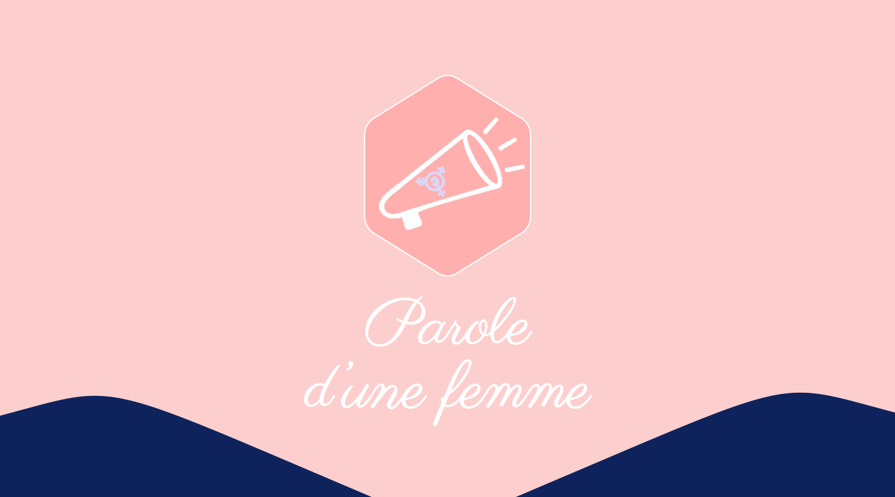

Parole d'une femme
Ce projet a été réalisé dans le cadre de mon tout premier semestre en BUT MMI. L’objectif était de créer un site web mobile nous permettant de mettre en avant la cause féministe en laissant la parole aux femmes à travers 3 articles illustrants les inégalité que celle-ci peuvent vivre au quotidien dans le monde. Ce projet étant mon tout premier projet j’ai donc découvert l’organisation classique d’un projet en différentes phases. Tout d’abord la phase recherche où j’ai pu prévoir les tâches à faire, réaliser mes recherches informationnelles et écrire les articles. Ensuite, j'ai réalisé un dossier de communication et un behance. Puis enfin la partie réalisation avec la maquette finale sur figma.
Ce projet me tiens particulièrement à coeur car je supporte activement le mouvement féministe et que ce projet m’a permis d’en apprendre encore plus sur cette cause.
Liens :
BehanceMaquette